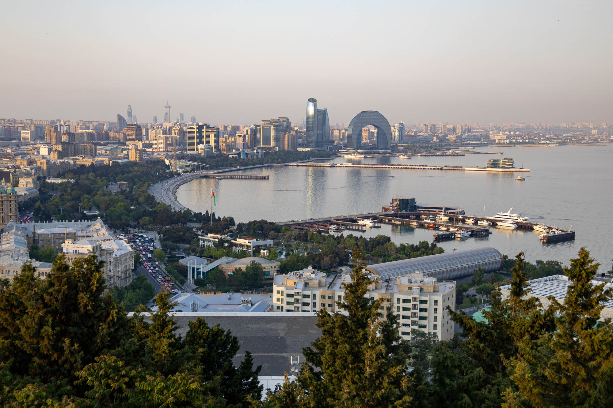
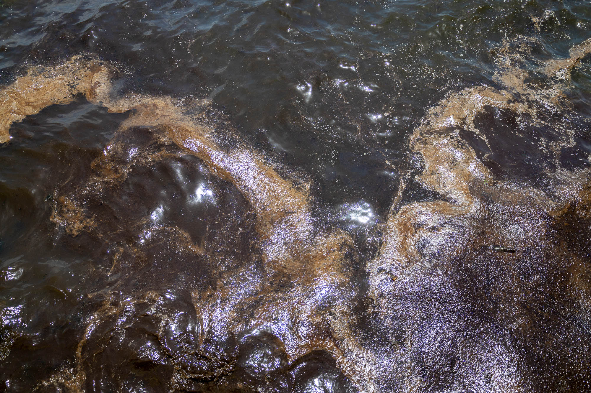
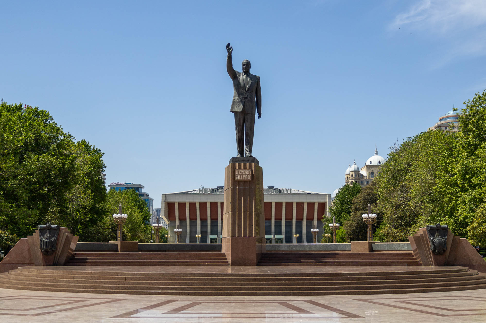
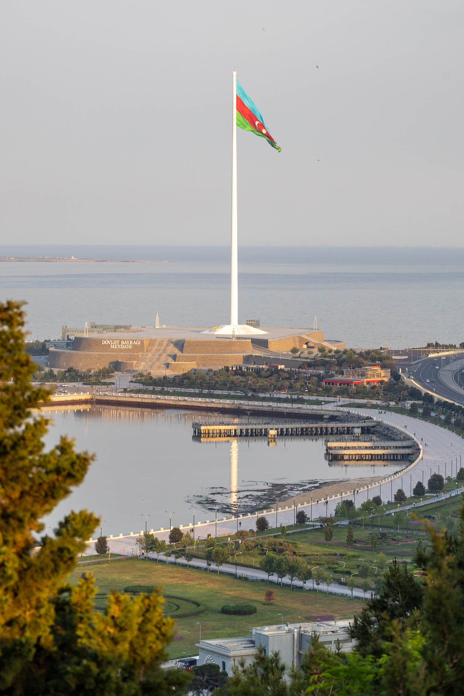
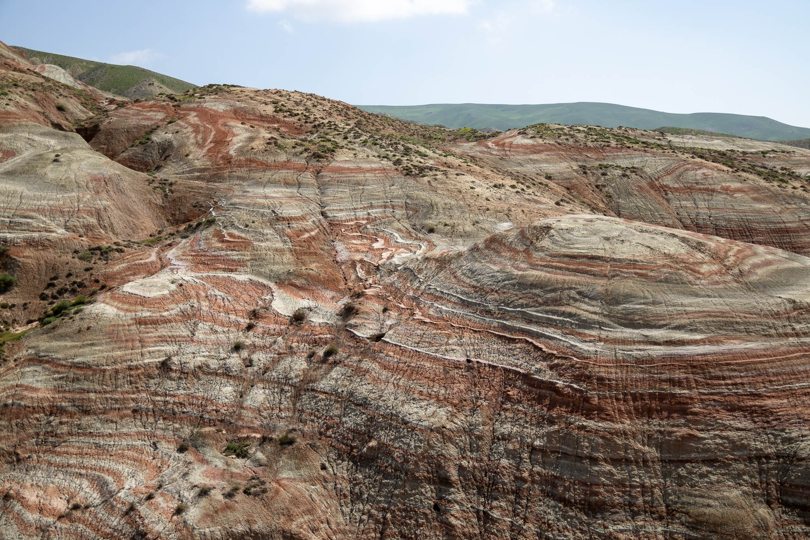
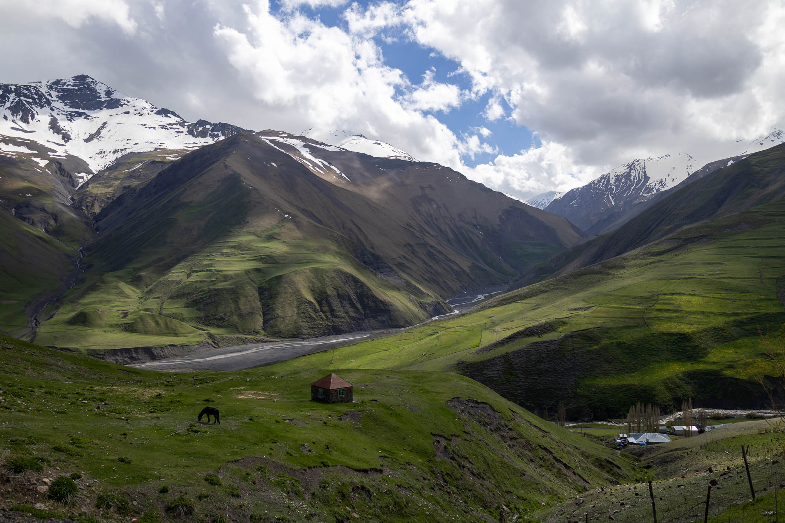
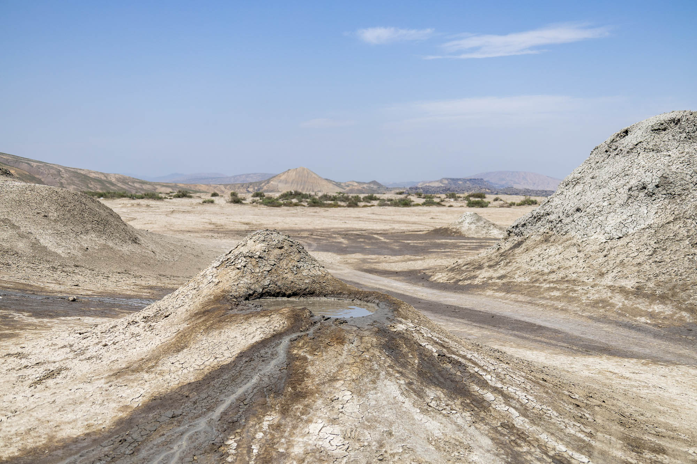
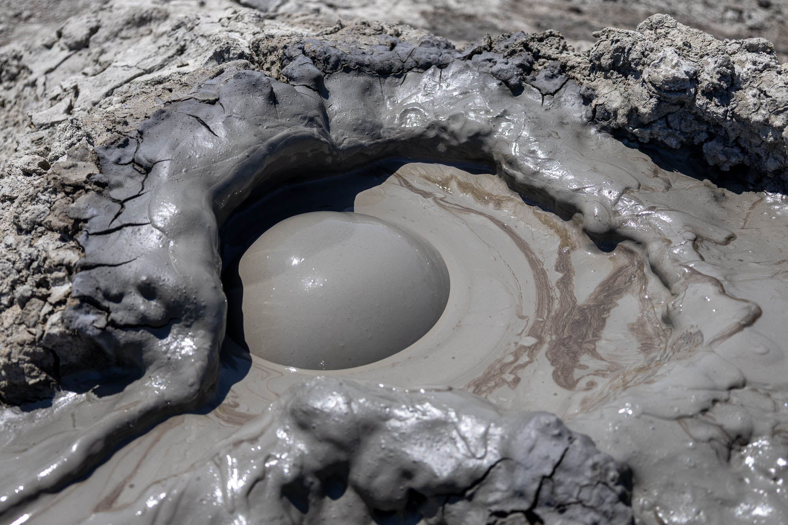
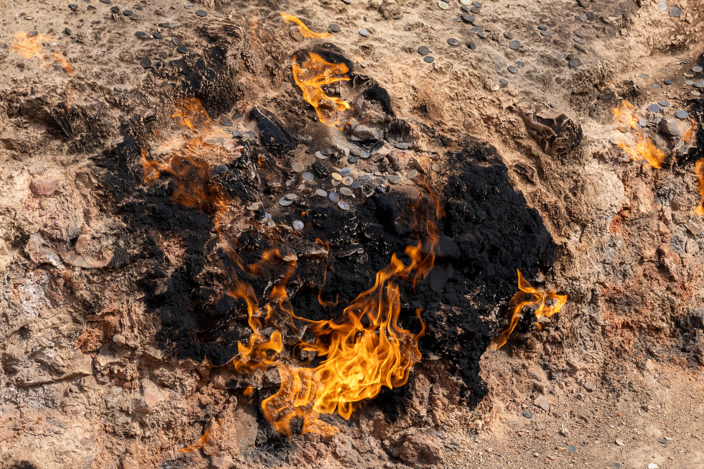
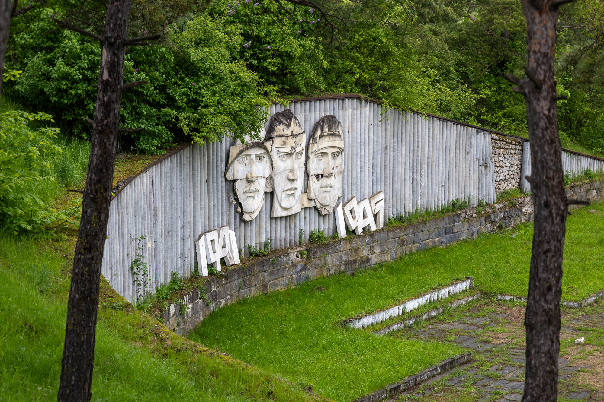

In the Caucasus region, to the east of Armenia and Georgia, south of Russia, and north of Iran, is the country of Azerbaijan. It's a land that is a mystery to most people. It's a culture defined by its strange mix of tradition and modernity. It's a place filled with lots of things to discover.

Baku
On the shore of the Caspian Sea's Absheron Peninsula is the capital of Azerbaijan. It's the lowest-lying capital in the world, 28 meters below sea level.
As a city, Baku looks quite modern compared to other Caucasus capitals. A bit of oil wealth will do that. In between classic stone buildings you'll find towering glass skyscrapers and meticulously maintained public spaces.

The Caspian Sea
But with oil wealth, also comes the burden of an oil-powered economy. On my first day in Baku, while walking down the seafront promenade, I couldn't escape the smell of oil. At first I couldn't figure out where it was coming from, until I looked over the railing and into the sea.
While I can't say its like this all the time in Baku, the photo above captures a visible layer of oil drifting inland from the Caspian Sea's offshore drilling platforms during my visit. You can forget any hopes of swimming in the Caspian Sea near Baku.

Heydar Aliyev Monument
The politics of Azerbaijan are equally messy. From high-ranking KGB official, to First Secretary of the Communist Party of Azerbaijan, to military-coup-backed authoritarian President – the journey for the country's former famous leader has been a wild ride. But you wouldn't know that from the history you hear about Heydar on tours or how celebrated he is by monuments around the city.
Two weeks before the 2003 Azerbaijani presidential election, Heydar withdrew his candidacy and appointed his son, Ilham, as his party's presidential candidate. Ilham Aliyev was then elected president in an election that international observers deemed to be neither free nor fair. The fact that Ilham's wife, Mehriban Aliyeva, is the current Vice President tells you just about all you need to know about the state of the authoritarian system Azeris have lived in since Heydar Aliyev came back to power in the mid-1990s.

State Flag Square
On the 1st of September 2010, the world gained a new record-breaking flagpole. Towering at 162 meters, it flew a monumental 350 kilogram Azerbaijani flag measuring 35 meters by 70 meters.
However, the record was brief. Within months, Tajikistan completed its Dushanbe flagpole, stripping Baku of the record. Yet, the flag I'm writing about is not the flag you see above, because competition is fierce in the flag world.
Azerbaijan reclaimed the advantage over Tajikistan in 2024 by installing a massive 195 meter flagpole and a larger 40 meter by 80 meter flag in late 2025. This is the structure and flag I got to see during my 2026 visit.

Candy Cane Mountains
For a relatively small country, Azerbaijan is incredibly diverse. It is home to eight out of eleven existing climate types, including semi-desert, arid steppe, and mountain tundra.
In the northern arid steppe, you can find one of the developing tourist attractions of the country, colourful sedimentary bands which have been oxidised into different colours based on their mineral composition.

Khinaliq Valley
The landscape diversity continues near the Russian border with tundra-like valleys and peaks. Winding dirt roads take you to the highest village in Azerbaijan, the small village of Khinaliq. Situated at 2,180 meter above sea level, with views of the 4,500-meter-tall Caucasus mountains, this truly is a unique and breathtaking spot.

Mud Volcanos
In the south of the country, in the semi-desert region, you can find mud volcanoes. These have been created by gases trapped under the ground returning to the surface, along with water from the water table. Often these just bubble away peacefully and make small sets of volcanoes, but in some places, you'll see gigantic mountains painted with dark grey mudslides from the large hill-sized explosions.


Yanar Dağ
In other parts of the country closer to Baku, the trapped underground gases have been burning steadily for decades. Rumour has it that this fire at Yanar Dağ was accidentally lit in the 1950s by a passing shepherd.
Other fires, like at Ateshgah of Baku, have naturally extinguished due to petroleum and gas extraction in the area. But places like these have since been replaced with piped gas supply, retaining the mythos of Azerbaijan as the land of fire.

Shusha Fortress
Far on the other side of Azerbaijan, in the disputed area of Nagorno-Karabakh, is the small mountain town of Shusha. Shusha and its fortress, originally created by the Karabakh Khanate, have been the centrepiece of the town for centuries. It once protected monuments from both Armenian and Azerbaijani cultures.
However, in recent history, it has been witness to countless conflicts dating back to the March 1920 massacre and expulsion of the Armenian population by Azerbaijan. In September 1988, when the first Nagorno-Karabakh conflict started, the Armenians were again expelled before the 1992 capture of the city by Armenian forces, which this time resulted in the expulsion of the Azerbaijani population.
The Second Nagorno-Karabakh conflict in 2020 reversed the fate of the area with the capture by Azerbaijani forces, resulting in the expulsion of the Armenian population again. The area is now firmly under the control of the Azerbaijani military, with access restricted by military checkpoints throughout the mountains.

Memorial to the Participants of the Great Patriotic War
Below the fortress walls is a memorial to the other great conflict that has shaped Azerbaijan, World War II. Seeking to control oil fields and supply routes, both the Allies and the Axis fought over Azerbaijan in the early 1940s. This Soviet-era memorial is dedicated to nearly one third of the Azerbaijan population that participated in the Second World War.